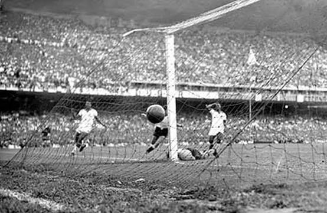

Un recorrido por el deporte más popular del mundo

El fútbol moderno nació en Inglaterra en el siglo XIX, aunque existen juegos similares en civilizaciones antiguas como China, Grecia y Roma. En 1863 se crearon las primeras reglas oficiales.
Con el paso del tiempo, el fútbol se expandió por todo el mundo. Se profesionalizó, surgieron clubes, ligas y se convirtió en un fenómeno global que une culturas.
La primera Copa Mundial de la FIFA se jugó en 1930 en Uruguay. Desde entonces, el torneo se ha convertido en el evento deportivo más importante del planeta.